draw2Svg Quick Reference
Repository: https://github.com/aufarah/draw2Svg
Documentation: https://draw2svg.netlify.app/
import draw2Svg as dw
Canvas and Document Structure
d = dw.Drawing(width, height, origin=(0,0), idPrefix='d',
displayInline=True, **svgArgs)
It is recommended to use a unique idPrefix for each svg on a webpage.
d = dw.Drawing(400, 300, idPrefix='pic')
Basic Shapes
One Line
dw.Line(sx, sy, ex, ey, **kwargs)
line = dw.Line(30,30,90,90,stroke='black')
d.append(line)
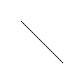
Multiple Lines
This is SVG's polyline.
(But draw2Svg renders as path with multiple L.)
dw.Lines(sx, sy, *points, close=False, **kwargs)
lines = dw.Lines(10,90,10,10,80,90,80,10,fill='none',stroke='black')
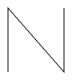
x = [30+x*10 for x in range(20)]
y = [80,20]*10
xy = [item for sublist in zip(x,y) for item in sublist]
d.append(dw.Lines(*xy,stroke='black',stroke_width=5,fill='none'))
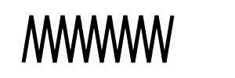
Polygon
SVG Polygon is Lines with close=True.
polygon = dw.Lines(15,10,55,10,45,20,5,20,fill='red',stroke='black',close='true')
star = dw.Lines(48,16, 16,96, 96,48, 0,48, 88,96,
stroke='black',fill='none',close='true')
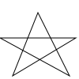
Rectangle
dw.Rectangle(x, y, width, height, **kwargs)
# black interior, no outline
d.append(dw.Rectangle(10,10,90,150))
# no interior, black outline
d.append(dw.Rectangle(120,10,60,120,fill='none',stroke='black'))
# blue interior, thick semi-transparent red outline
d.append(dw.Rectangle(210,10,75,90,fill='#0000ff',stroke='red',
stroke_width=7,stroke_opacity=0.5))
# semi-transparent yellow interior, dashed green outline
d.append(dw.Rectangle(300,10,105,60,fill='yellow',fill_opacity=0.5,
stroke='green',stroke_width=2,stroke_dasharray='5,2'))
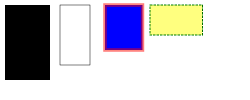
Rounded corners:
# define both rx and ry
d.append(dw.Rectangle(10,10,80,180,rx='10',ry='10',stroke='black',fill='none'))
# if only one is given, it applies to both
d.append(dw.Rectangle(110,10,80,180,ry='20',stroke='black',fill='none'))
d.append(dw.Rectangle(210,10,80,180,rx='40',stroke='black',fill='none'))
# rx and ry unequal
d.append(dw.Rectangle(310,10,80,180,rx='30',ry='10',stroke='black',fill='none'))
d.append(dw.Rectangle(410,10,80,180,rx='10',ry='30',stroke='black',fill='none'))
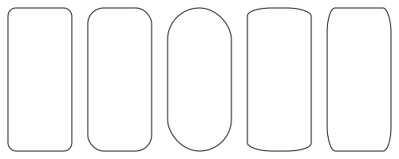
Circle
dw.Circle(cx, cy, r, **kwargs)
cx and cy point to circle's center, r refer to its radius
d.append(dw.Circle(50,50,40))
d.append(dw.Circle(150,50,40,stroke='black',fill='none'))
d.append(dw.Circle(250,50,40,stroke='black',fill='none',stroke_width=15))

Ellipse
dw.Ellipse(cx, cy, rx, ry, **kwarg)
(cx,cy) points to the center and (rx,ry) tells its radius
d.append(dw.Ellipse(350,50,50,30))
d.append(dw.Ellipse(460,50,50,30,stroke='black',fill='none'))
d.append(dw.Ellipse(550,50,30,45,stroke='black',fill='none'))

Pie
dw.Pie(cx, cy, r, startDeg, endDeg, **kwargs)
startDeg,endDeg = start and end angle in degree (0 = east)
(Note that degrees are here counterclockwise, so 90 is north.)
pie = dw.Pie(cx=100,cy=100,r=80,startDeg=0,endDeg=90,fill= "None",
stroke="pink",stroke_width=3)
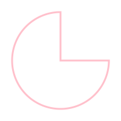
Color and Painting Properties
For a full list, see W3C specifications.
fill and stroke_color
Possible color keyword names are: aqua, black, blue, fuchsia, gray, green,
lime, maroon, navy, olive, purple, red, silver, teal, white, and yellow.
Or #rrggbb, or #rgb (hexadecimal) or rgb(R,G,B) with 0-255 or with 0-100% for each value.
c = ['red', '#9f9', '#9999ff', 'rgb(255,128,64)', 'rgb(60%,20%,60%)']
for i in range(5):
y = (i+1)*10
d.append(dw.Line(10,y,80,y,stroke=c[i],stroke_width=5))
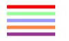
fill_opacity and stroke_opacity
0 = transparent, 1 = solid.
for i in range(5):
y = (i+1)*10
d.append(dw.Line(0,y,290,y,stroke='black',stroke_width=5,stroke_opacity=i/5+0.1))
d.append(dw.Rectangle(i*60,70,50,50,fill='red',fill_opacity=i/5+0.1))
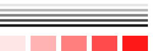
stroke_dasharray
# nine-pixel dash, five-pixel gap
d.append(dw.Line(10,30,100,30,stroke_dasharray='9,5',stroke='black',stroke_width=2))
# five-pixel dash, three-pixel gap, nine-pixel dash, two-pixel gap
d.append(dw.Line(10,20,100,20,stroke_dasharray='5,3,9,2',stroke='black',stroke_width=2))
# Odd number of entries is duplicated
d.append(dw.Line(10,10,100,10,stroke_dasharray='9,3,5',stroke='black',stroke_width=2))
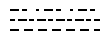
stroke_width
for i in range(20):
d.append(dw.Line((i+1)*15,10,(i+1)*15,90,stroke='black',stroke_width=abs(10-i)+1))
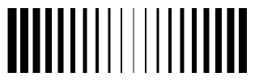
stroke_linecap
stroke_linecap can be set to butt , round, or square.
Note that the latter two extend beyond the coordinates.
d.append(dw.Line(10,15,50,15,stroke='black',stroke_linecap='butt',stroke_width=15))
d.append(dw.Line(10,45,50,45,stroke='black',stroke_linecap='round',stroke_width=15))
d.append(dw.Line(10,75,50,75,stroke='black',stroke_linecap='square',stroke_width=15))
# guide lines
d.append(dw.Lines(10,0,10,100,stroke='#999'))
d.append(dw.Lines(50,0,50,100,stroke='#999'))
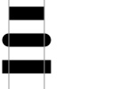
stroke_linejoin
Define the way lines connect at a corner with stroke-linejoin: miter (pointed),
round, or bevel (flat).
d.append(dw.Line(0,20,300,20,stroke='gray'))
g = dw.Group(stroke_width=20,stroke='black',fill='none')
g.append(dw.Lines(10,80,50,20,90,80,stroke_linejoin='miter'))
g.append(dw.Lines(110,80,150,20,190,80,stroke_linejoin='round'))
g.append(dw.Lines(210,80,250,20,290,80,stroke_linejoin='bevel'))
d.append(g)

stroke_miterlimit
When two line segments meet at a sharp angle and miter joins have been specified
for stroke-linejoin, it is possible for the miter to extend far beyond the
thickness of the line stroking the path. The stroke-miterlimit imposes a
limit on the ratio of the miter length to the stroke-width.
When the limit is exceeded, the join is converted from a miter to a bevel.
(From W3C doc)
d.append(dw.Line(0,30,300,30,stroke='gray'))
g = dw.Group(stroke_width=20,stroke='black',fill='none',stroke_linejoin='miter')
g.append(dw.Lines(10,90,40,30,70,90))
g.append(dw.Lines(100,90,130,30,160,90,stroke_miterlimit=2.3)) #jumps between 2.2 and 2.3
g.append(dw.Lines(190,90,220,30,250,90,stroke_miterlimit=1))
d.append(g)
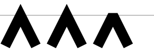
Path
path = dw.Path(**kwargs)
The following Path specifiers are also availiable as lowercase characters. In that case, their movements are relative to current location.
Note that in draw2Svg it is not possible to have more than one element in a
command. But it is possible to add the commands directly, for instance
p = dw.Path()
p.M(100,100).L(200,100).L(200,200).Z
M = moveto
path.M(x,y)
Move to x,y (and draw nothing).
L = lineto
path.L(x,y)
Draw a straigt line to x,y.
g = dw.Group(stroke='black',fill='none')
p = dw.Path()
p.M(10,10).L(100,10)
g.append(p)
p = dw.Path()
p.M(10,20).L(100,20).L(100,50)
g.append(p)
p = dw.Path()
p.M(40,60).L(10,60).L(40,42)
p.M(60,60).L(90,60).L(60,42)
g.append(p)

H = horizontal line
path.H(x)
Draw a horizontal line to the new x location.
V = vertical line
path.V(x)
Draw a vertical line to the new y location.
p = dw.Path(stroke='black',fill='none')
d.append(p.M(10,10).H(100))
d.append(p.M(10,20).H(100).V(50))
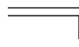
Q = quadratic Bézier curve (one control point)
path.Q(x_ctl,y_ctl,x_end,y_end)
Draw a quadratic Bézier curve from current location to x_end,y_end by means
of x_ctl,y_ctl.
# curve only (left)
p = dw.Path(stroke='black',fill='none',stroke_width=3)
d.append(p.M(30,75).Q(240,30,300,120))
# with control point and construction lines
d.append(dw.Use(p,300,0))
g = dw.Group(stroke='gray',fill='gray')
g.append(dw.Circle(330,75,3))
g.append(dw.Circle(600,120,3))
g.append(dw.Circle(540,30,3))
g.append(dw.Line(330,75,540,30))
g.append(dw.Line(540,30,600,120))
g.append(dw.Line(330,75,600,120,stroke_dasharray='5,5'))
g.append(dw.Circle(435,52.5,3))
g.append(dw.Circle(570,75,3))
g.append(dw.Line(435,52.5,570,75))
g.append(dw.Circle(502.5,63.75,4,fill='none'))
d.append(g)
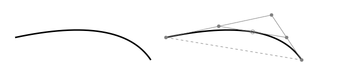
T = smooth quadratic Bézier curve (generated control point)
path.T(x,y)
Draws a quadratic Bézier curve from the current point to (x,y). The control point is assumed to be the reflection of the control point on the previous command relative to the current point. (If there is no previous command or if the previous command was not a Q, q, T or t, assume the control point is coincident with the current point.) (From W3C Doc)
# sequence left
p = dw.Path(stroke='black',fill='none',stroke_width=3)
d.append(p.M(30,60).Q(80,-10,100,60).Q(130,25,200,40))
# with smooth continuation right
p = dw.Path(stroke='black',fill='none',stroke_width=3,transform='translate(200,0)')
d.append(p.M(30,60).Q(80,-10,100,60).T(200,40))

C = cubic Bézier curve (two control points)
path.C(x_ctl_1,y_ctl_1,x_ctl_2,y_ctl_2,x_end,y_end)
Draw a cubic Bézier curve by means of two control points (one for start and one for end).
pnt_1 = (40,50)
pnt_2 = (110,50)
ctl_1_x = (10,60,110,110,60,110)
ctls_2 = ((140,10),(90,10),(40,10),(40,10),(90,90),(40,90))
for i in range(6):
trans = 'translate(%d,0)' % i*100
p = dw.Path(stroke='black',fill='none',stroke_width=3,transform=trans)
ctl_1 = (ctl_1_x[i],10)
ctl_2 = ctls_2[i]
p.M(*pnt_1)
p.C(*ctl_1,*ctl_2,*pnt_2)
d.append(p)
g = dw.Group(stroke='gray',fill='gray',stroke_width=1,transform=trans)
g.append(dw.Circle(*ctl_1,2))
g.append(dw.Circle(*ctl_2,2))
g.append(dw.Line(*pnt_1,*ctl_1))
g.append(dw.Line(*pnt_2,*ctl_2))
d.append(g)
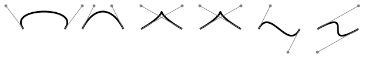
S = smooth cubic Bézier (one control point)
Similar to T in quadratic Bézier curve. The first control point is calculated
as reflection of the previous second control point.
path.S(x_ctl_2,y_ctl_2,x_end,y_end)
pnt_1 = (30,100)
pnt_2 = (100,100)
pnt_3 = (200,80)
ctl_1 = (50,30)
ctl_2 = (70,50)
ctl_3 = (150,40)
p = dw.Path(stroke='black',fill='none',stroke_width=3)
p.M(*pnt_1)
p.C(*ctl_1,*ctl_2,*pnt_2)
p.S(*ctl_3,*pnt_3)
d.append(p)
for pnt,ctl in zip((pnt_1,pnt_2,pnt_3),(ctl_1,ctl_2,ctl_3)):
d.append(dw.Circle(*pnt,4))
d.append(dw.Circle(*ctl,2,stroke='gray',fill='gray'))
d.append(dw.Line(*pnt,*ctl,stroke='gray'))
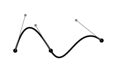
A = elliptical Arc
path.A(rx,ry,rot,largeArc,sweep,ex,ey)
rx,ry = radius
rot = x-axis rotation
largeArc = 1 or 0
sweep = 1 (positive) or 0 (negative) angle
ex,ey = end point
p = dw.Path(stroke='red')
d.append(p.M(125,75).A(100,50,rot=0,largeArc=0,sweep=0,ex=225,ey=125))
p = dw.Path(stroke='blue')
d.append(p.M(125,75).A(100,50,rot=0,largeArc=0,sweep=1,ex=225,ey=125))
p = dw.Path(stroke='rgb(0 80 255)',stroke_dasharray='5 3')
d.append(p.M(125,75).A(100,50,rot=0,largeArc=1,sweep=0,ex=225,ey=125))
p = dw.Path(stroke='rgb(255 80 0)',stroke_dasharray='5 3')
d.append(p.M(125,75).A(100,50,rot=0,largeArc=1,sweep=1,ex=225,ey=125))

Z = closepath
path.Z()
Close the path.
p = dw.Path(stroke='black',fill='none')
d.append(p.M(10,10).h(30).v(50).h(-30).Z())
d.append(p.M(50,10).h(30).v(50).Z())

Text
dw.Text(text, fontSize, x=None, y=None, *, center=False,
valign=None, lineHeight=1, lineOffset=0, path=None,
startOffset=None, pathArgs=None, tspanArgs=None,
cairoFix=True, _skipCheck=False, **kwargs)
Fill and Outline
Default is black as fill colour and no outline.
# control lines
l = dw.Path(stroke='gray')
l.M(20,0).V(370)
for i in range(1,7):
l.M(10,i*60).H(500)
d.append(l)
# default text, with outline, and outline only
d.append(dw.Text('Simplest Text',x=20,y=60,fontSize=50))
d.append(dw.Text('Outline / Filled',x=20,y=120,fontSize=50,stroke='black'))
d.append(dw.Text('Too big stroke',x=20,y=180,fontSize=50,stroke='black',stroke_width=5))
d.append(dw.Text('Outlined only',x=20,y=240,fontSize=50,stroke='black',stroke_width=0.5,fill='none'))
d.append(dw.Text('Outlined and colored',x=20,y=300,fontSize=50,stroke='black',fill='red'))
d.append(dw.Text('Colored fill only',x=20,y=360,fontSize=50,fill='blue'))
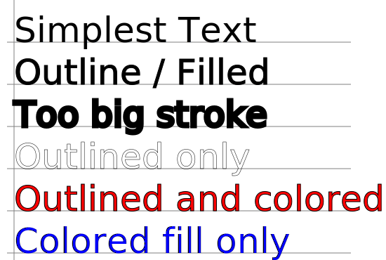
Weight, Style, Decoration, Spacing
d.append(dw.Text('bold',fontSize=30,x=20,y=35,font_weight='bold'))
d.append(dw.Text('italic',fontSize=30,x=20,y=75,font_style='italic'))
d.append(dw.Text('under',fontSize=30,x=20,y=115,text_decoration='underline'))
d.append(dw.Text('over',fontSize=30,x=20,y=155,text_decoration='overline'))
d.append(dw.Text('through',fontSize=30,x=20,y=195,text_decoration='line-through'))
d.append(dw.Text('normal word space',fontSize=30,x=200,y=35))
d.append(dw.Text('more word space',fontSize=30,x=200,y=75,word_spacing=10))
d.append(dw.Text('less word space',fontSize=30,x=200,y=115,word_spacing=-5))
d.append(dw.Text('wide letter space',fontSize=30,x=200,y=155,letter_spacing=8))
d.append(dw.Text('narrow letter space',fontSize=30,x=200,y=195,letter_spacing=-2))
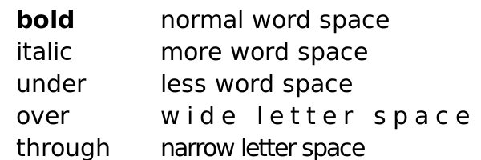
Text Alignment
Horizontal alignment (text_anchor) can be start, middle or end.
Vertival alignment (valign) can be bottom, middle or top.
d.append(dw.Line(75,100,75,0,stroke='gray'))
d.append(dw.Line(140,30,250,30,stroke='gray'))
d.append(dw.Line(140,60,250,60,stroke='gray'))
d.append(dw.Line(140,90,250,90,stroke='gray'))
d.append(dw.Text('Start',24,75,30,text_anchor='start'))
d.append(dw.Text('Middle',24,75,60,text_anchor='middle'))
d.append(dw.Text('End',24,75,90,text_anchor='end'))
d.append(dw.Text('Bottom',24,150,30,valign='bottom'))
d.append(dw.Text('Middle',24,150,60,valign='middle'))
d.append(dw.Text('Top',24,150,90,valign='top'))
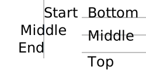
TSpan
Continues a Text element.
txt = dw.Text('Switch among ',24,10,40)
txt.append(dw.TSpan('italic',font_style='italic'))
txt.append(dw.TSpan(', normal, and '))
txt.append(dw.TSpan('bold',font_weight='bold'))
txt.append(dw.TSpan(' text.'))
d.append(txt)
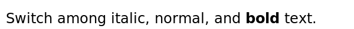
txt = dw.Text('F',24,10,30)
txt.append(dw.TSpan('a',dy=5))
txt.append(dw.TSpan('l',dy=31,dx=21))
txt.append(dw.TSpan('l',dy=89,dx=54))
d.append(txt)
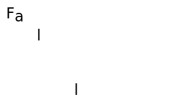
The same could be achieved by a list of dx/dy values:
d.append(dw.Text('Fall',24,10,30,dx='0,0,21,54',dy='0,5,21,54'))
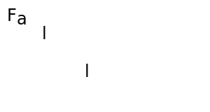
Rotate
Either one angle (degrees), or a list which is applied to all characters. If the list is smaller than the number of characters, the last angle persists.
d.append(dw.Text('Rotate',20,20,20,letter_spacing=20,rotate='90'))
d.append(dw.Text('Rotate',20,20,80,letter_spacing=20,rotate='0 90 180 270'))
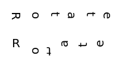
TSpan can also be used:
from random import randrange
txt = dw.Text('',20,20,50,letter_spacing=20)
txt.append(dw.TSpan('R',rotate=randrange(360)))
txt.append(dw.TSpan('OT',rotate='50 20'))
txt.append(dw.TSpan('ATE',rotate=''.join([str(randrange(360)) for i in range(3)])))
d.append(txt)
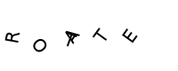
Setting Text Length
s = 'Two words'
d.append(dw.Text(s,20,20,30,textLength=250,lengthAdjust='spacing'))
d.append(dw.Text(s,20,20,70,textLength=250,lengthAdjust='spacingAndGlyphs'))
d.append(dw.Text(s+' (normal length)',20,20,110))
d.append(dw.Text(s,20,20,150,textLength=80,lengthAdjust='spacing'))
d.append(dw.Text(s,20,20,190,textLength=80,lengthAdjust='spacingAndGlyphs'))
d.append(dw.Line(20,10,20,195,stroke='gray'))
d.append(dw.Line(270,80,270,10,stroke='gray'))
d.append(dw.Line(100,130,100,195,stroke='gray'))
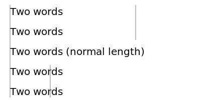
Text on a Path
curve_path = dw.Path(stroke='gray',fill='none')
curve_path.M(30,50).C(50,20,70,20,120,50).S(150,10,200,50)
round_corner = dw.Path(stroke='gray',fill='none')
round_corner.M(250,30).L(300,30).A(30,30,0,0,1,330,60).L(330,110)
sharp_corner = dw.Path(stroke='gray',fill='none')
sharp_corner.M(30,110).L(100,110).L(100,160)
discontinuous = dw.Path(stroke='gray',fill='none')
discontinuous.M(150,110).A(40,30,0,1,0,230,110).M(250,110).L(270,140)
center_curve = dw.Path(stroke='gray',fill='none')
center_curve.M(330,130).L(330,160).A(30,30,0,0,1,300,180).L(200,180)
d.append(curve_path)
d.append(round_corner)
d.append(sharp_corner)
d.append(discontinuous)
d.append(center_curve)
t_cp = dw.Text('Following a cubic Bézier curve',14,path=curve_path)
t_rc = dw.Text("Going 'round the bend",14,path=round_corner)
t_sc = dw.Text('Making a quick turn',14,path=sharp_corner)
t_dc = dw.Text('Text along a broken path',14,path=discontinuous)
t_ct = dw.Text('centered',14,path=center_curve,offset='50%',text_anchor='middle')
d.append(t_cp)
d.append(t_rc)
d.append(t_sc)
d.append(t_dc)
d.append(t_ct)
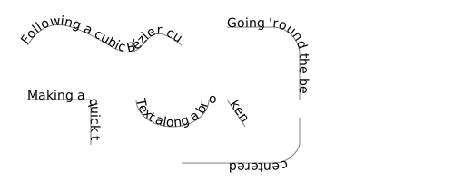
Multi Line Text
This is a particular feature of drawSvg: A list of strings as input for Text() is rendered as multi-line text.
t = ['this is', 'a', 'multiline text', 'given as a', 'list']
d.append(dw.Text(t,14,50,20,text_anchor='middle'))
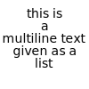
Gradient, Clip, Mask
Linear Gradient
gradient = dw.LinearGradient(x1, y1, x2, y2, gradientUnits='userSpaceOnUse', **kwargs)
gradient.addStop(offset, color, opacity=None)
grad = dw.LinearGradient(150,0,0,0)
grad.addStop(0,'green')
grad.addStop(1,'yellow')
d.append(dw.Rectangle(10,10,150,60,stroke='black',fill=grad))
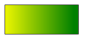
Radial Gradient
gradient = dw.RadialGradient(cx, cy, r, **kwargs)
gradient.addStop(offset, color, opacity=None)
gradient = dw.RadialGradient(200,150,100)
gradient.addStop(0, 'green', 1)
gradient.addStop(1, 'red', 1)
bg = dw.Rectangle(x=0,y=0,width="100%",height="100%",fill=gradient)
d.append(bg)
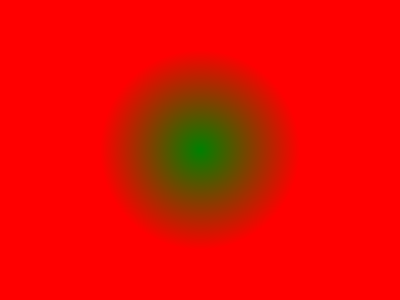
Clip
clip_name = dw.ClipPath()
To add shape as Clip, use .append() method.
To apply Clip, fill clip_path argument with clip_name.
# show both shapes as they are
d.append(dw.Rectangle(100,100,100,100,stroke='gray',fill='none'))
d.append(dw.Circle(100,100,100,fill='none',stroke='gray',stroke_dasharray='2,5'))
# apply rect as clip to circle
clip = dw.ClipPath()
clip.append(dw.Rectangle(100,100,100,100))
d.append(dw.Circle(100,100,100,fill="cyan",clip_path=clip))
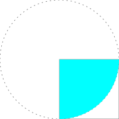
Another example:
# draw a random path in the left half of the canvas
p = dw.Path(stroke='black',stroke_width=2,fill='none')
p.M(150,150)
from random import randint
for i in range(40):
p.L(randint(0,300),randint(0,200))
d.append(p)
# circle as clipping shape
circ = dw.Circle(150,100,75)
c = dw.ClipPath()
c.append(circ)
# repeat lines in the right half and apply clipping
d.append(dw.Use(p,300,0,clip_path=c))
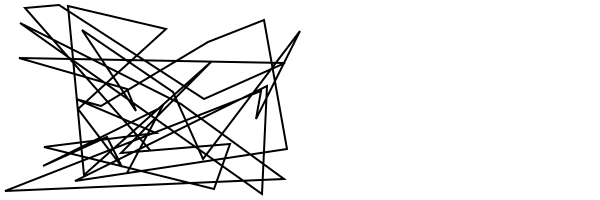
Complex clip path:
curve1 = dw.Path(stroke='black',fill='none')
curve1.M(5,55).C(25,5, 45,-25, 75,55).C(85,85, 20,105, 40,55).Z()
curveClip = dw.ClipPath()
curveClip.append(curve1)
text1 = dw.Text('CLIP',48,20,20,stroke='black',fill='none',transform='rotate(60)')
textClip = dw.ClipPath()
textClip.append(text1)
shapes = dw.Group()
shapes.append(dw.Rectangle(0,50,90,60,fill='#999'))
shapes.append(dw.Circle(25,25,25,fill='#666'))
shapes.append(dw.Lines(30,0,80,0,80,100,close='true',fill='#ccc'))
# draw shapes with clip path
d.append(dw.Use(shapes,0,0,clip_path=curveClip))
# show clip path
g = dw.Group(transform='translate(100,0)')
g.append(shapes)
g.append(curve1)
d.append(g)
# draw shapes with text as clip path
d.append(dw.Use(shapes,0,150,clip_path=textClip))
# show text clip path
g = dw.Group(transform='translate(100,150)')
g.append(shapes)
g.append(text1)
d.append(g)
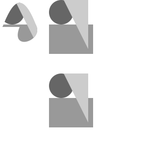
Mask
mask_name = dw.Mask()
The transparency of the masking object is transfered to the masked object. Opaque pixels of the mask produce opaque pixels of the masked object. Transparent parts of the mask make the corresponding parts of the masked object invisible.
gradient = dw.LinearGradient(*[0,0],*[1,0], gradientUnits='objectBoundingBox')
gradient.addStop(0, 'white')
gradient.addStop(1, 'black')
mask = dw.Mask()
box = dw.Rectangle(
x=30,y=0,
width=100,height=100,
fill=gradient)
mask.append(box)
#initial shape
rect = dw.Rectangle(
x=0,y=0,
width=200,height=100,
fill="cyan",)
d.append(rect)
#After Mask
rect = dw.Rectangle(
x=0,y=0,
width=200,height=100,
fill="pink", mask=mask)
d.append(rect)
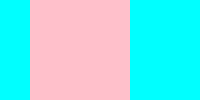
Mask using opaque colors:
# define the masks
redmask = dw.Mask(maskContentUnits='objectBoundingBox')
redmask.append(dw.Rectangle(0,0,1,1,fill='#f00'))
greenmask = dw.Mask(maskContentUnits='objectBoundingBox')
greenmask.append(dw.Rectangle(0,0,1,1,fill='#0f0'))
bluemask = dw.Mask(maskContentUnits='objectBoundingBox')
bluemask.append(dw.Rectangle(0,0,1,1,fill='#00f'))
whitemask = dw.Mask(maskContentUnits='objectBoundingBox')
whitemask.append(dw.Rectangle(0,0,1,1,fill='#fff'))
# display the colors
d.append(dw.Rectangle(10,10,50,50,fill='#f00'))
d.append(dw.Rectangle(70,10,50,50,fill='#0f0'))
d.append(dw.Rectangle(130,10,50,50,fill='#00f'))
d.append(dw.Rectangle(190,10,50,50,fill='#fff',stroke='black'))
# mask
g = dw.Group(mask=redmask)
g.append(dw.Circle(35,115,25,fill='black'))
g.append(dw.Text('Red',14,35,80,text_anchor='middle'))
d.append(g)
g = dw.Group(mask=greenmask)
g.append(dw.Circle(95,115,25,fill='black'))
g.append(dw.Text('Green',14,95,80,text_anchor='middle'))
d.append(g)
g = dw.Group(mask=bluemask)
g.append(dw.Circle(155,115,25,fill='black'))
g.append(dw.Text('Blue',14,155,80,text_anchor='middle'))
d.append(g)
g = dw.Group(mask=whitemask)
g.append(dw.Circle(215,115,25,fill='black'))
g.append(dw.Text('White',14,215,80,text_anchor='middle'))
d.append(g)
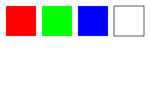
Mask alpha using opacity only:
fullmask = dw.Mask(maskContentUnits='objectBoundingBox')
fullmask.append(dw.Rectangle(0,0,1,1,fill_opacity=1.0,fill='white'))
three_fourths = dw.Mask(maskContentUnits='objectBoundingBox')
three_fourths.append(dw.Rectangle(0,0,1,1,fill_opacity=0.75,fill='white'))
one_half = dw.Mask(maskContentUnits='objectBoundingBox')
one_half.append(dw.Rectangle(0,0,1,1,fill_opacity=0.5,fill='white'))
one_fourth = dw.Mask(maskContentUnits='objectBoundingBox')
one_fourth.append(dw.Rectangle(0,0,1,1,fill_opacity=0.25,fill='white'))
g = dw.Group(mask=fullmask)
g.append(dw.Circle(35,35,25))
g.append(dw.Text('100%',14,35,80,text_anchor='middle'))
d.append(g)
g = dw.Group(mask=three_fourths)
g.append(dw.Circle(95,35,25))
g.append(dw.Text('50%',14,95,80,text_anchor='middle'))
d.append(g)
g = dw.Group(mask=one_half)
g.append(dw.Circle(155,35,25))
g.append(dw.Text('50%',14,155,80,text_anchor='middle'))
d.append(g)
g = dw.Group(mask=one_fourth)
g.append(dw.Circle(215,35,25))
g.append(dw.Text('25%',14,215,80,text_anchor='middle'))
d.append(g)
Group, Use, Defs, Image
Group
dw.Group(**kwargs)
Any style specified in the g tag will apply to all child elements in the group.
g_house = dw.Group(id='house',fill='none',stroke='black')
g_house.append(dw.Rectangle(6,50,60,60))
g_house.append(dw.Lines(6,50,36,9,66,50))
g_house.append(dw.Lines(36,110,36,80,50,80,50,110))
d.append(g_house)
g_man = dw.Group(id='man',fill='none',stroke='blue')
g_man.append(dw.Circle(85,56,10))
g_man.append(dw.Line(85,66,85,80))
g_man.append(dw.Lines(76,104,85,80,94,104))
g_man.append(dw.Lines(76,70,85,76,94,70))
d.append(g_man)
g_woman = dw.Group(id='woman',fill='none',stroke='red')
g_woman.append(dw.Circle(110,56,10))
g_woman.append(dw.Lines(110,66, 110,80, 100,90, 120,90, 110,80))
g_woman.append(dw.Line(104,104,108,90))
g_woman.append(dw.Line(112,90,116,104))
g_woman.append(dw.Lines(101,70, 110,76, 119,70))
d.append(g_woman)
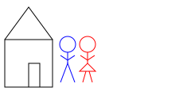
Use
dw.Use(otherElem, x, y, **kwargs)
g_house = dw.Group(id='house',fill='none',stroke='black')
g_house.append(dw.Rectangle(6,50,60,60))
g_house.append(dw.Lines(6,50,36,9,66,50))
g_house.append(dw.Lines(36,110,36,80,50,80,50,110))
d.append(g_house)
# use id which is set
d.append(dw.Use('house',100,50))
# or use variable name
d.append(dw.Use(g_house,150,20))
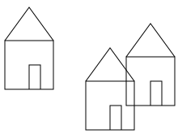
Defs
Elements that are not appended to the drawing but are referenced by other
elements will automatically be included in <defs></defs>.
(source)
d = dw.Drawing(200,200,idPrefix='defs')
# Do not append `bond` to the drawing
bond = dw.Line(0, 0, 10, 10, stroke='black')
# `bond` is automatically added into <defs>
# A default `id` is generated if one isn't set
d.append(dw.Use(bond, 20, 50))
d.append(dw.Use(bond, 50, 50))
d.append(dw.Use(bond, 80, 50))
print(d.asSvg())
Output:
<defs>
<path d="M0,0 L10,10" stroke="black" id="defs0" />
</defs>
<use xlink:href="#defs0" x="20" y="50" />
<use xlink:href="#defs0" x="50" y="50" />
<use xlink:href="#defs0" x="80" y="50" />
Image
dw.Image(x, y, width, height, path=None, data=None,
embed=False, mimeType=None, **kwargs)
d.append(dw.Image(0,0,200,200,'example1.png',embed=True))
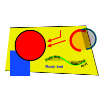
Transformations
Translate
transform = 'translate(x,y)'
This can be added to many objects. Simple example:
d.append(dw.Rectangle(0,0,40,40,transform='translate(50,50)'))
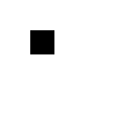
Scale
transform = 'scale(x_mult[,y_mult])'
Note that scaling touches also stroke width.
square = dw.Rectangle(0,0,40,40,fill='none',stroke='black',stroke_width=2)
d.append(dw.Use(square,10,10,transform='scale(2)'))
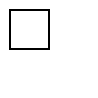
It is possible to specify x and y scale seperately:
square = dw.Rectangle(0,0,40,40,fill='none',stroke='black',stroke_width=2)
d.append(dw.Use(square,10,10))
d.append(dw.Use(square,10,10,transform='scale(3,1.5)'))
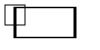
Scaling around a center point:
# center of scaling
d.append(dw.Circle(100,100,4,fill='black'))
# non-scaled rectangle
rect = dw.Rectangle(70,80,60,40,stroke='black',fill='none')
d.append(rect)
# scaled rectangles (point times scale-1)
d.append(dw.Use(rect,0,0,transform='translate(-100,-100) scale(2)',stroke_width=0.5))
d.append(dw.Use(rect,0,0,transform='translate(-150,-150) scale(2.5)',stroke_width=0.4))
d.append(dw.Use(rect,0,0,transform='translate(-200,-200) scale(3)',stroke_width=0.33))
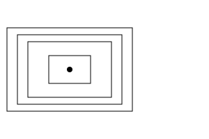
Rotate
transform = 'rotate(angle, cx=0, cy=0)
angle counts clockwise in degrees; cx/cy are the center of rotation.
# show frame
d.append(dw.Rectangle(0,0,200,200,stroke='gray',fill='none'))
# rotation is around (0,0)
d.append(dw.Rectangle(70,30,40,40,fill='gray'))
d.append(dw.Rectangle(70,30,40,40,fill='black',transform='rotate(45)'))
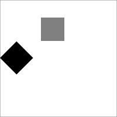
# center of rotation
d.append(dw.Circle(100,100,3,flii='black'))
# non-rotated arrow
g = dw.Group(id='arrow',stroke='black')
g.append(dw.Line(110,100,160,100))
g.append(dw.Lines(160,100,155,95,155,105,fill='black'))
d.append(g)
# rotated arrows
d.append(dw.Use(g,0,0,transform='rotate (60,100,100)'))
d.append(dw.Use(g,0,0,transform='rotate (-90,100,100)'))
d.append(dw.Use(g,0,0,transform='rotate (-150,100,100)'))
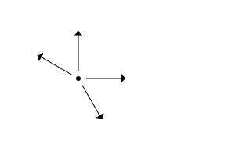
Skew
transform = 'skewX(angle)`
transform = 'skewY(angle)`
g = dw.Group(stroke='gray',stroke_dasharray='4 4')
g.append(dw.Line(0,0,200,0))
g.append(dw.Line(20,0,20,90))
g.append(dw.Line(120,0,120,90))
d.append(g)
h = dw.Group(transform='translate(20,0)')
h1 = dw.Group(transform='skewX(30)')
h1.append(dw.Lines(50,0,0,0,0,50,stroke='black',fill='none',stroke_width=2))
h1.append(dw.Text('skewX',16,0,60))
h.append(h1)
d.append(h)
i = dw.Group(transform='translate(120,0)')
i1 = dw.Group(transform='skewY(30)')
i1.append(dw.Lines(50,0,0,0,0,50,stroke='black',fill='none',stroke_width=2))
i1.append(dw.Text('skewY',16,0,60))
i.append(i1)
d.append(i)
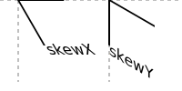
Cartesian Coordinates
A drawing which can be translated to cartesian coordinates by setting
the y translate value to the drawing's height, and also applying
scale(1,-1).
Trapezoid with (0,0) top left:
d = dw.Drawing(200,200)
d.append(dw.Line(0,0,100,0,stroke='black'))
d.append(dw.Line(0,0,0,100,stroke='black'))
d.append(dw.Lines(40,40,100,40,70,70,40,70,fill='gray',stroke='black'))
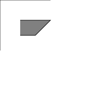
Translated to (0,0) bottom left:
d = dw.Drawing(200,200)
g = dw.Group(transform='translate(0,200) scale(1,-1)')
g.append(dw.Line(0,0,100,0,stroke='black'))
g.append(dw.Line(0,0,0,100,stroke='black'))
g.append(dw.Lines(40,40,100,40,70,70,40,70,fill='gray',stroke='black'))
d.append(g)
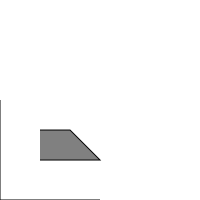
Or even applying scale(1,-1) to the whole drawing:
d = dw.Drawing(200,200,transform='scale(1,-1)')
d.append(dw.Line(0,0,100,0,stroke='black'))
d.append(dw.Line(0,0,0,100,stroke='black'))
d.append(dw.Lines(40,40,100,40,70,70,40,70,fill='gray',stroke='black'))
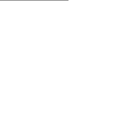
Credits
Most examples are based on J. David Eisenberg, SVG Essentials, O'Reilly 2002.
Thanks to Ahmad Aufar Husaini for his fork (draw2Svg) and for providing some documentation (some examples are used here).
Thanks to Casey Duckering for drawSvg and many helpful explanations on its discussion page.